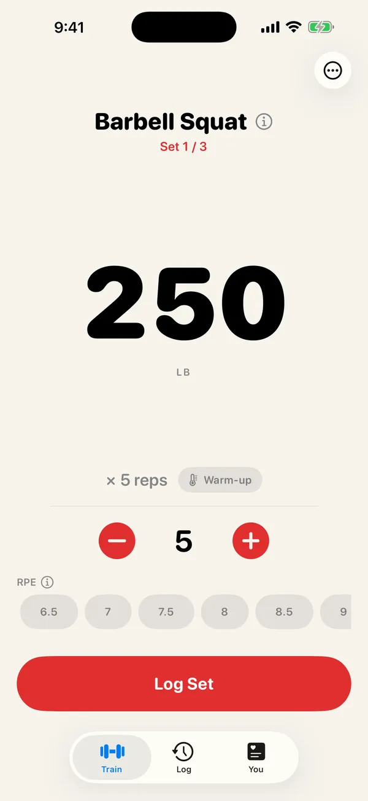
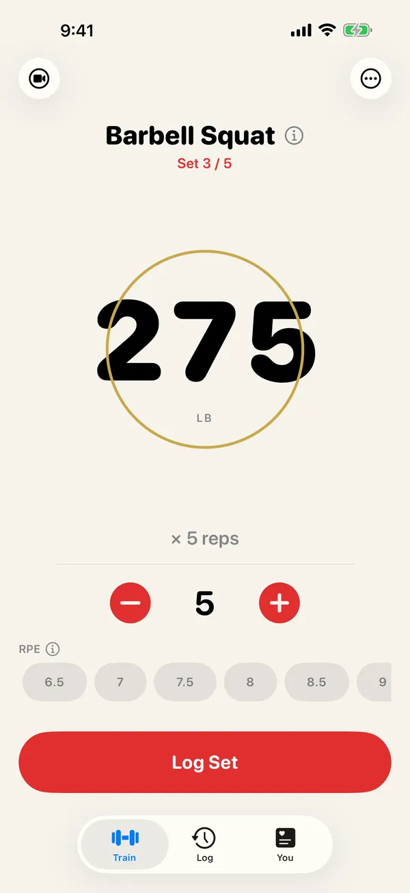
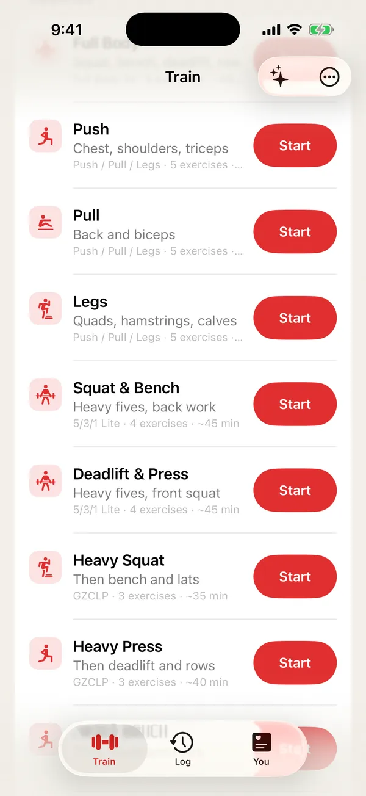
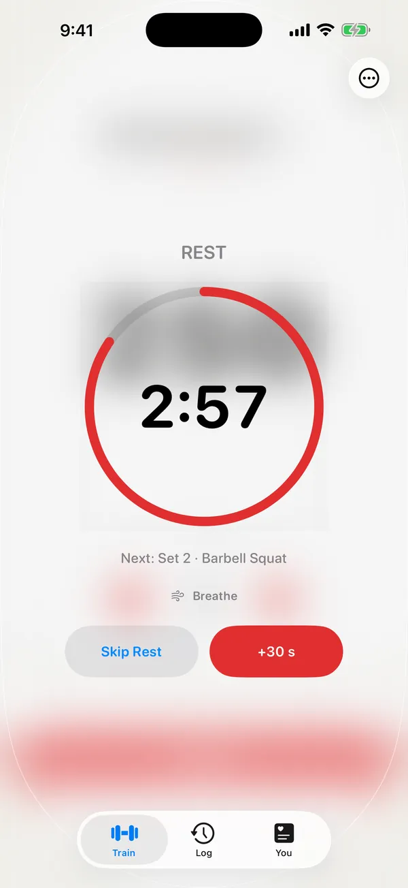
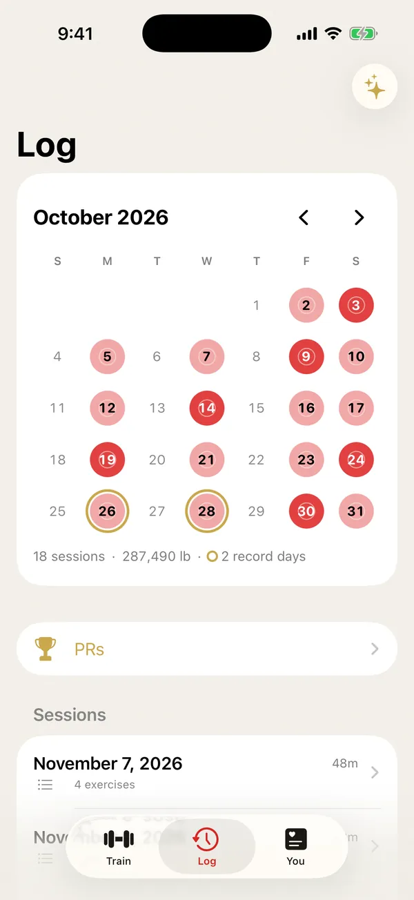
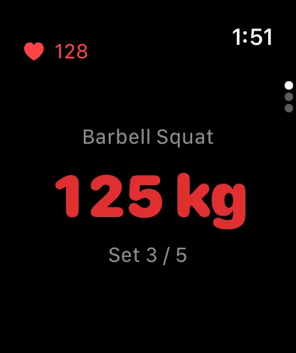

Gym workout tracker for iPhone and Apple Watch
Log every lift in one tap.
Reps opens each exercise on the weight and reps you did last time. Tap once and get back to the bar. No account, no ads.
Download on theApp StoreFree to download. Logging is free and unlimited. Reps Pro is optional.

- One tap per setLast time's weight, ready
- 10 programs built inOr build your own
- Apple Watch appIncluded, free
- No accountWorkouts saved to Apple Health
Log a set in seconds
Your last weight, ready.
Every lift opens on the weight and reps you did last time. If nothing changed, tap Log Set. If it did, drag the big number and tap.
- Swap or skip a lift mid-workout in two taps
- Warm-up sets worked out to the plates you load
- Clear suggestions for when to add weight

Run your program
PPL, 5/3/1, GZCLP. Built in.
Ten programs ship with Reps, from bodyweight, dumbbell and machine starters to Upper/Lower, Full Body, Push/Pull/Legs, GZCLP, 5/3/1 Lite and nSuns Lite.
- Build your own routines from more than 850 exercises, each with steps and pictures
- Supersets, RPE and notes when you want them

Rest
Rest runs itself.
Log a set and the rest timer starts on its own. It shows on your Lock Screen and in the Dynamic Island, and tells you what's next, so you don't have to open the app.

Progress
Every session, stamped.
The Training Ledger marks every day you trained on a calendar. Days you set a record get a gold ring, and records turn gold the moment you set them.
- Estimated one-rep max, streaks and weekly totals
- Finished workouts can go to your calendar, if you turn it on

Apple Watch
Log from your wrist.
Start on iPhone and keep going on Apple Watch. It's one workout, never doubled. Or leave the phone in your bag and log from the watch on its own, with your heart rate live.
- Turn the crown to set the weight, tap to log
- Double-tap to log a set on supported Apple Watch models

Quick to reach, wherever you are
Tap a sticker
Put a sticker on your rack, bench or favorite machine and set it up once. Tap your iPhone on it and that exercise opens, ready to log.
Siri and the Action Button
Say "Start Push in Reps", or put a routine on the Action Button.
Widgets and Control Center
See your next set and your streak on the Lock Screen, a rest timer in StandBy, and start a workout from Control Center.
Bring your history
Switching from Strong or Hevy? Import your past workouts in one step.
Yours, and only yours
No account, no ads, nothing sent to us. Your workouts live in Apple Health, so your history outlasts any app.
Export anytime
Take everything with you as a spreadsheet file whenever you want.
Free to log. Pro when you want more.
Reps
Free
- Unlimited workouts, routines and history
- All ten built-in programs
- Apple Watch app, widgets and the rest timer
- Stickers, Siri and Shortcuts
- Import and export
Reps Pro
Monthly, yearly with a 7-day free trial, or once for life
- Weekly recap: what you lifted, what went up and what to watch
- Strength for life: see your lifting show up in walking speed, stairs and balance
- Build by asking: "Push day, 45 min, no deadlifts" becomes a routine
- Scan any machine: point the camera at the label, get the exercise
- Form check (beta): film a set to see bar path, speed and left-right balance
Prices are shown in the App Store in your currency. Subscriptions renew automatically unless canceled at least 24 hours before the end of the period. Build by asking needs an iPhone with Apple Intelligence.
Questions
Do I need an account?
No. There's nothing to sign up for. Open Reps and start a workout.
Is Reps free?
Yes. Logging, routines, programs, history, the Apple Watch app and widgets are free with no limits. Reps Pro adds a weekly recap, strength-for-life trends, building routines by asking, machine scanning and form check.
Where are my workouts saved?
In Apple Health on your iPhone. Your history stays in your Health app even if you delete Reps. We don't run servers and never receive your workouts. Read the privacy policy.
Does it work with Apple Watch?
Yes. The watch app is included. Start on iPhone and continue on the watch, or log from the watch on its own.
Can I bring my history from another app?
Yes. Export a file from Strong or Hevy and import it in Reps Settings. Your past workouts appear in your history and in Apple Health.
What are the stickers?
Blank tap stickers you buy online and set up once in Reps Settings. Put one on your rack or a machine, and tapping your iPhone on it opens that exercise. They're optional: every lift opens where you left off either way.
Which devices does it run on?
iPhone with iOS 18 or later, and Apple Watch with watchOS 11 or later. Reps isn't available for iPad or Mac.
How do I cancel Reps Pro?
In the Settings app, tap your name, then Subscriptions, then Reps. You can also open Reps Settings and tap Manage Subscription. More on subscriptions.